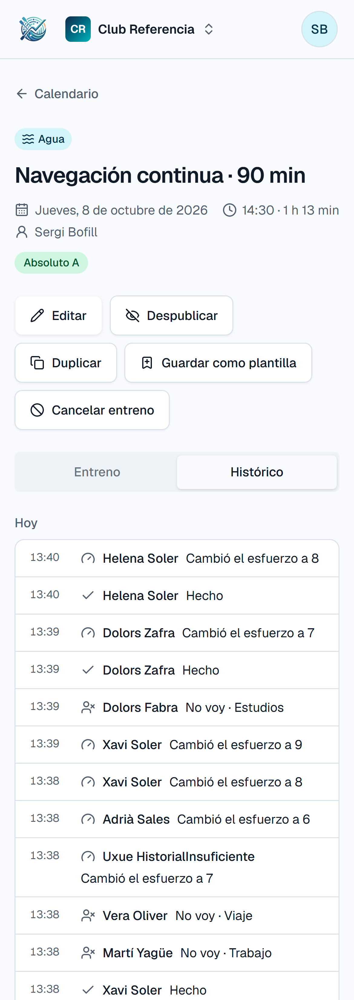

Todo lo que pasó en cada entreno.

Pestaña «Histórico» de un entreno del club de prueba

Pestaña «Histórico» de un entreno del club de prueba
La pestaña aparece a entrenadores y administradores del club, en cada entreno.
Solo lo ven entrenadores y administradores